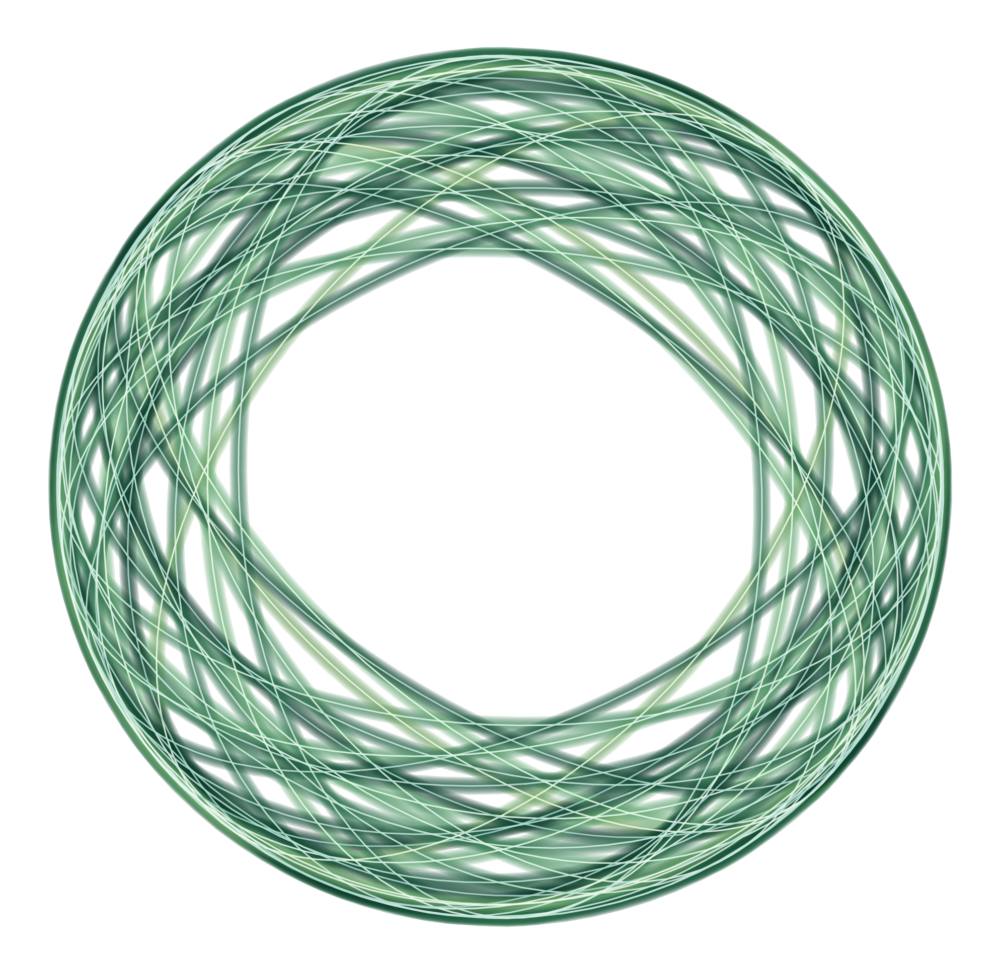
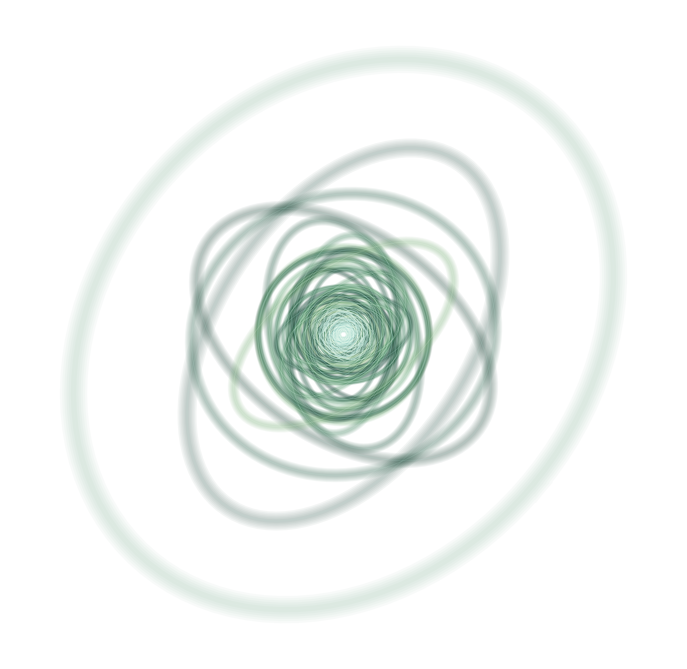
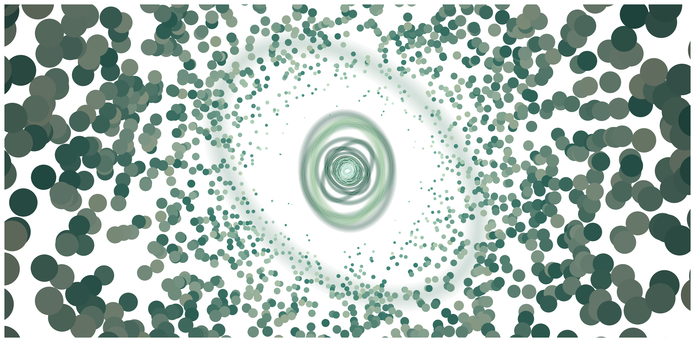
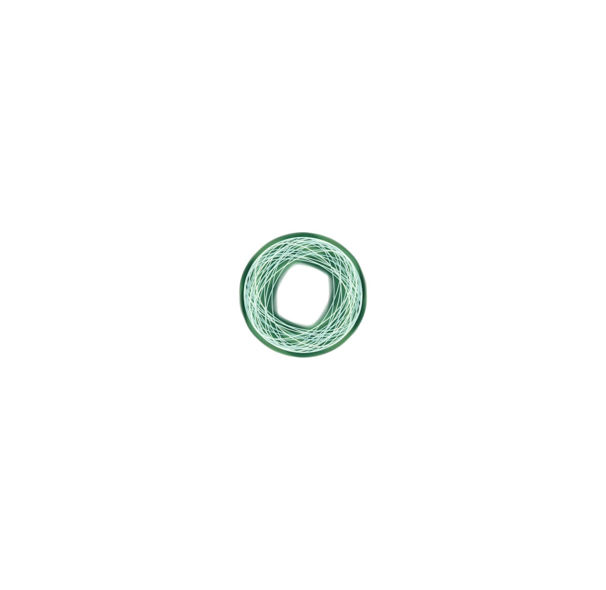

VR, intuition, and quantum education
Can You Touch an Orbital?
Audun Skau Hansen Chief Research Officer @ MyrezePreviously: Senior lecturer @ KURT/UiO/Hylleraas
About me
Theoretical & Quantum Chemistry
Hylleraas Centre
Chemistry Education
KURT/UiO, Learning Assistant Program
VR & Real-time 3D
Myreze, 3D Deep Learning
A Centre of Excellence developing simulation methods for molecules in complex and extreme environments.
The Question

Textbook orbital

VR orbital
Is it possible to touch an orbital?
The "Impossible" Course
Physical Chemistry II – Intro to Quantum Chemistry
Course scope
→ Intro QM (particle-in-a-box → hydrogen)
→ Many-body QM (helium, molecules, ab initio)
→ Time-dependent QM (IR, spectroscopy)
10 credits. Basically a full bachelor unpacked.
Cognitive bottlenecks
Hilbert spaces, bra-ket, determinants
electrons ↔ molecules ↔ spectra
Static blobs in textbooks
Active learning helps, but...
Even in LA-driven settings, students struggle to
"see"
wavefunctions, correlation,
orbital pictures beyond static blobs.
We need better embodied, interactive representations.
The Quantum Workforce Challenge
Workforce shortage & skill mismatch
— Greinert et al., PRPER 2023
— Kaur & Venegas-Gomez, 2022
Education is concentrated at grad/PhD level
— Perron et al., QUEST 2021
Many STEM students see quantum as "only for physics elites".
The gap
Most quantum chemistry & computing practitioners:
Physics masters and PhDs
What we also need:
Engineers, technicians, quantum-aware developers
→ Better intuition-building tools
A first meeting with quantum chemistry


Particles can have wave properties
Louis De Broglie's waves (1924)
Erwin Schrödinger's equation (1925)

Max Born's interpretation (1926)
$|\Psi|^2$ gives probability density


From particles and forces → wavefunctions and probabilities

From one particle to many
Helium: 2 electrons, 1 nucleus
The molecular Schrödinger equation
The variational principle
Any trial wavefunction gives energy ≥ exact ground state
Requirements on $\Psi(x_1, x_2)$
- Correct number of electrons
- Normalizable: $\int |\Psi|^2 dx_1 dx_2 = 1$
- Antisymmetric: $\Psi(x_1, x_2) = -\Psi(x_2, x_1)$
- Physically reasonable fragmentation
Simple product → Slater determinant
Hartree product: $\psi_1(x_1)\psi_2(x_2)$
↓
Slater determinant: $\frac{1}{\sqrt{2}}[\psi_1(x_1)\psi_2(x_2) - \psi_1(x_2)\psi_2(x_1)]$
Antisymmetry built in!
A basis function
$| \phi \rangle$
A basis set

$\{ | \phi_i \rangle \}$
Local vs delocalized basis functions

Basis expansion

$| \psi \rangle = \sum_i | \phi_i \rangle c_i$
The visualization problem
Students see orbitals as
static isosurfaces in a book
What if we could walk into the basis expansion?
Stepping Inside
VR + Braketlab as a didactic tool



What is it like to shrink?
Can everything in nature be sensed?
Small eyes let in little light.
Low pressure means few neighbors.
VR lets us cheat
We can artificially
enlarge, slow down, and externalize
wavefunctions until they become
navigable objects.
Braketlab: The pipeline
1. Jupyter + Braketlab: define model systems, orbitals, wavefunctions
2. Export: grids / isosurfaces as JSON/mesh
3. Load into VR: WebXR, Evince → headset
What students can do
Navigate 3D nodal structure
Interactive cross-sections
Embodied exploration
Change parameters in Python → immediately see shape update
Quantum Intuition Lab: Helium
Visualizing electron correlation
Step 1: Hartree product
$\psi_1(x_1) \cdot \psi_2(x_2)$
Product of two 1s-like orbitals
No explicit electron–electron correlation
(only mean-field)
Step 2: Slater determinant
$\frac{1}{\sqrt{2}}[\psi_1(x_1)\psi_2(x_2) - \psi_1(x_2)\psi_2(x_1)]$
What antisymmetry implies visually:
Nodal structure when electrons "swap"
Pauli exclusion as geometry
Step 3: Correlated wavefunction
Hylleraas-style correlation:
Show marginal densities
Visualize the "correlation hole"
around one electron
Connection to ab initio + ML
The same geometric intuitions:
basis expansions, correlation holes, nodal surfaces
underpin modern ML potentials and quantum-chemistry pipelines.
VR helps students see and debug these models, not just run them.
Closing the Loop
Can you touch an orbital?
Not literally, but we can get very close to a
tactile, embodied understanding
of wavefunctions.
European Competence Framework
Calls for a spectrum of roles beyond academic theorists:
VR + computational playgrounds make Hilbert space tangible
Practical applications
Learning goals after a VR orbital session
Formal evaluation is future work
The quantum computing connection
Orbitals live in a huge Hilbert space.
Qubits are another way of slicing that space.
Same need for intuition about:
superposition, basis choice, entanglement
Thank you!
audun@myreze.com